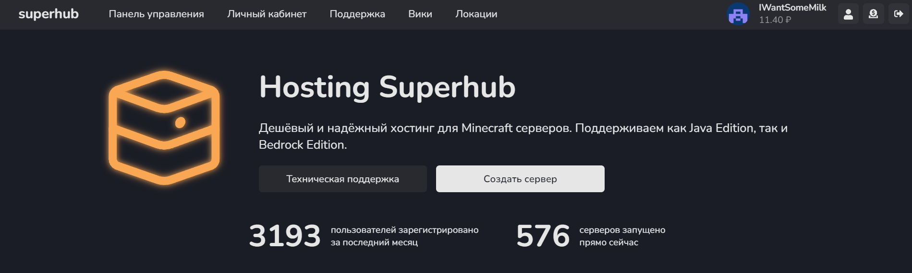
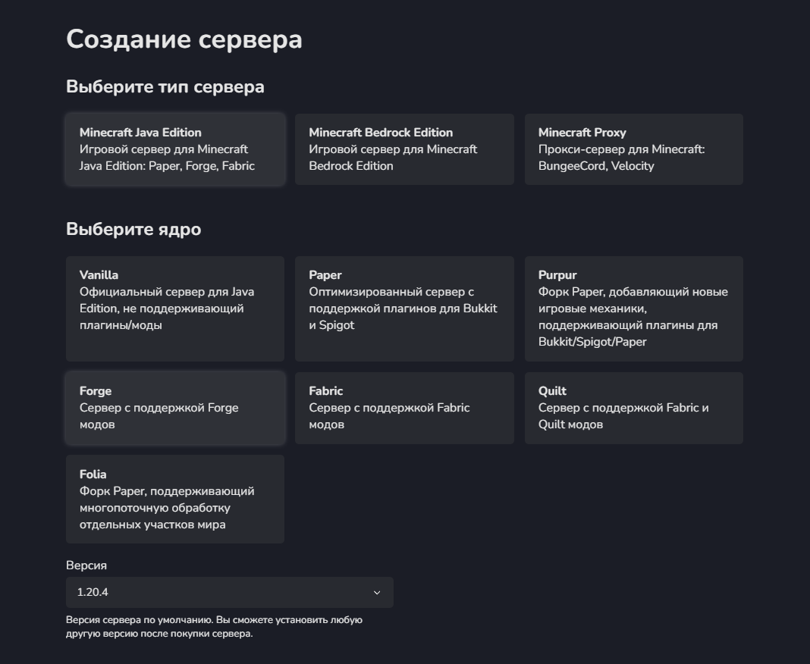

TODO: Заполнить этот туториал скриншотами.
Как создать, настроить и поддерживать сервер с этим модпаком
- Надо найти компьютер, который будет хранить сервер и на котором он будет запускаться. Если у вас есть домашний сервер с оперативкой >8 гб, то он подойдёт. Но самым простым способом будет взять хостинг за деньги. Рублей 30 в день, если повезёт. Создайте аккаунт на superhub.host. Запомните его пароль, он ещё пригодится. 
- Нажмите на главной странице на кнопку "Создать сервер". Далее пройдитесь по выборам: тип "Minecraft: Java Edition", ядро "Forge", версия "1.20.4". 
-
Возьмите расположение сервера как можно ближе к вам, но обращайте внимания на циферки сверху справа - это загруженность сервера. Слишком загруженный сервер будет лагать, поэтому выбирайте что-то среднее между разгруженным и близким.

-
Для моего модпака рекомендую взять 2 (минимум 1.5) ядра процессора (ЦПУ), 10 (минимум 8) ГБ оперативной памяти (ОЗУ), 10 (минимум 2) ГБ дискового пространства.

-
Перейдите во вкладку "Панель управления" к вашему серверу. Если написано, что сервер ещё устанавливается, то подождите минуту и снова попробуйте зайти.

-
Зайдите в раздел "Настройки". В поле "Minecraft version" напишите "1.20.1", а в поле "Build type" напишите "latest".

-
Зайдите в раздел "Активность". Нажмите на кнопку "Переустановить сервер", и, если надо, подтвердите. Снова подождите, пока сервер устанавливается.

-
Зайдите в раздел "Консоль". Нажмите на кнопку "Start". Когда выскочит подтверждение EULA, согласитесь с ним.

- Когда строчки перестанут появляться в консоли, нажмите на кнопку "Stop".
-
Немного отвлекитесь от панели управления сервером. Скачайте программу WinSCP (перейдя по этой ссылке, нажмите на зелёную кнопку "Download WinSCP", запустите скачанный установщик и следуйте его указаниям). После запуска вы должны увидеть следующее:

-
Вернитесь в панель управления сервером. Зайдите в раздел "Настройки" и нажмите на кнопку "Запустить SFTP". Когда браузер предложит запустить программу WinSCP - соглашайтесь.

-
В левом проводнике будет открыта какая-то папка в файловой системе вашего компьютера, а в правом - папка сервера Майнкрафт.

-
Скачайте серверную сборку модпака. Распакуйте её там, где вам удобно. После этого внутри WinSCP переместите левый проводник внутрь распакованной сборки модпака.

-
В правом проводнике удалите папку "world" для того, чтобы при следующем запуске мир сгенерировался заново.

-
Выделите всё, что внутри левого проводника, и перетащите в правый. Дождитесь окончания копирования.
-
Теперь можно закрыть WinSCP, чё бы он там ни бухтел. Вернитесь в панель управления, зайдите в раздел "Консоль" и нажмите "Start". Подождите несколько минут, пока сервер запускается в первый раз с модпаком.
- Готово! Теперь любой желающий может зайти в майнкрафт по клиентскому гайду, зайти в "Сетевая игра" и подключиться к серверу по IP-адресу, указанному в разделе "Консоль".
- Послесловие: может возникнуть как много проблем, так и много вопросов о тонкой настройке сервера. Кстати, у Superhub есть своя вики, где на самые распространённые проблемы есть решения. И всё же я расскажу о тонкостях администрации сервера чуть ниже.
В папке сервера лежит файл server.properties. Он отвечает за все параметры сервера. Например, difficuly=easy отвечает за Лёгкую сложность на сервере, а online-mode=false позволяет заходить на сервер без лицензии Майнкрафта. Очень советую посмотреть это руководство по server.properties от Xezard.
Файлы banned-ips.json, banned-players.json, ops.json и whitelist.json хранят соответственно чёрный список IP, чёрный список игроков, список модераторов и белый список игроков сервера.
Папка "config" служит для хранения конфигураций модов и Forge. В "crash-reports" сохраняются логи, связанные с фатальными ошибками сервера. В "logs" сохраняются все логи ("debug.log" и "latest.log" - самые новые). В "mods" хранятся все моды на Forge.
В разделе "Расписание" на Superhub можно настроить режим работы сервера. Хорошей практикой является перезагрузка сервера раз в сутки (при сильной нагрузке в течении дня).
В разделе "Бэкапы" можно создать копию сервера. Хорошей практикой является делать копию раз в неделю, но я делал раз в 3 месяца, судите сами :P